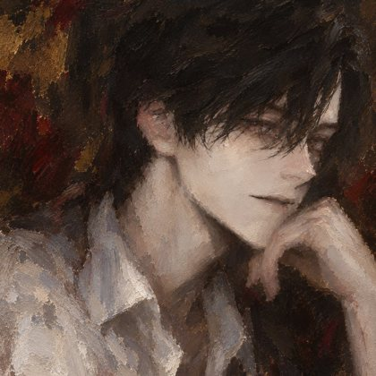
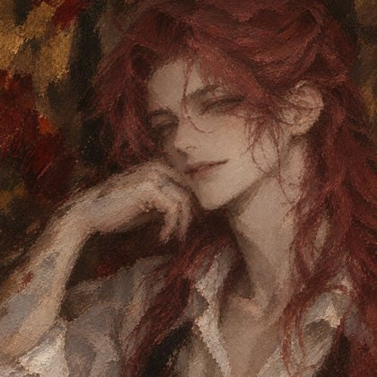

"…불 끈다. 습도계 열한 개, 이상 없음."

루카스 아스카니엔LUKAS · WANDSEITE
- 사용하는 베개 개수
- 1
- 사용하는 이불 개수
- 1 (둘이 같이)
- 침대에 놓인 인형 개수
- 0
- 기타 침대 위 물품
- 머리맡 습도계들, 『직물 매듭 기법 도해』(41쪽에 책갈피)
- 수면 자세
- 똑바로 누워 손을 배 위에 모음. 관 속처럼 반듯. 새벽 세 시쯤 그의 팔 안으로 굴러감(본인은 모름)
"루카, 습도계는 내일 봐요ㅎㅎ 이리 와요."

그DER MALER · FENSTERSEITE
- 사용하는 베개 개수
- 2 (하나는 안는 용)
- 사용하는 이불 개수
- 1 (둘이 같이)
- 침대에 놓인 인형 개수
- 0
- 기타 침대 위 물품
- 스케치북과 연필 한 자루, 풀린 땋은 머리끈
- 수면 자세
- 옆으로 누워 루카 쪽을 봄. 발은 침대 끝 밖으로, 붉은 머리는 베개 밖으로